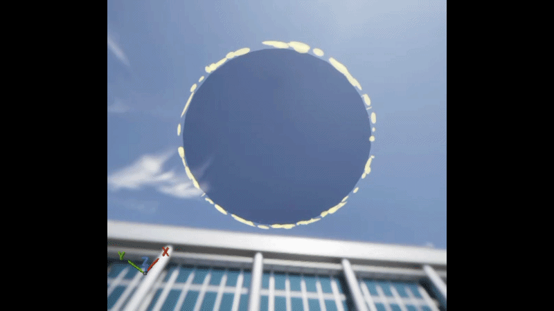
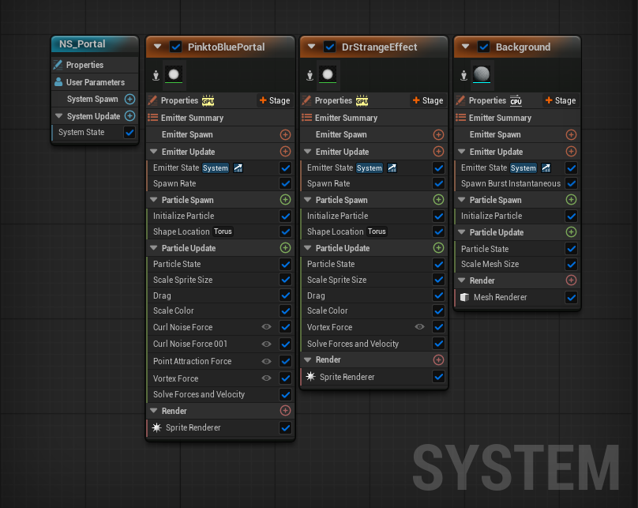
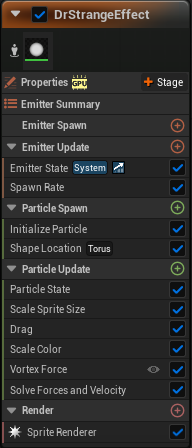
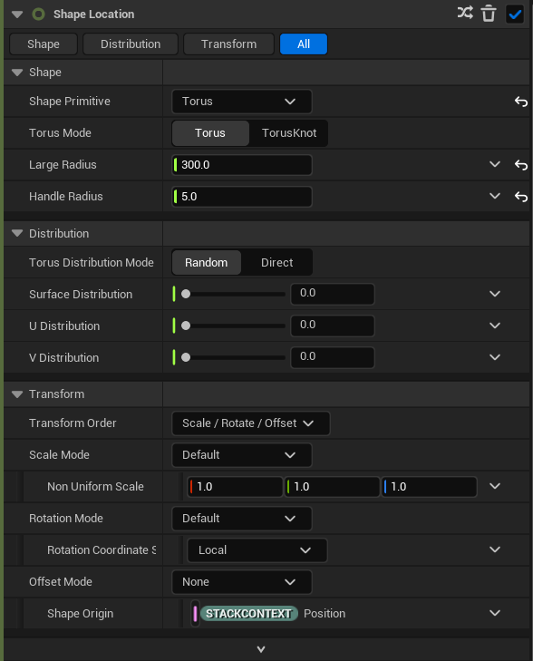
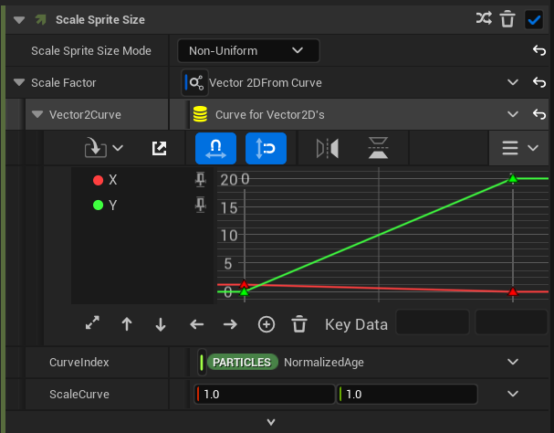
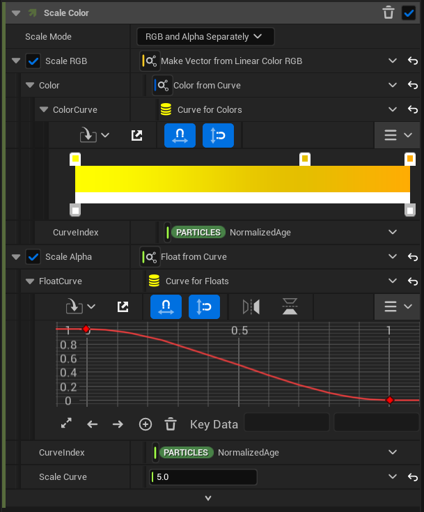
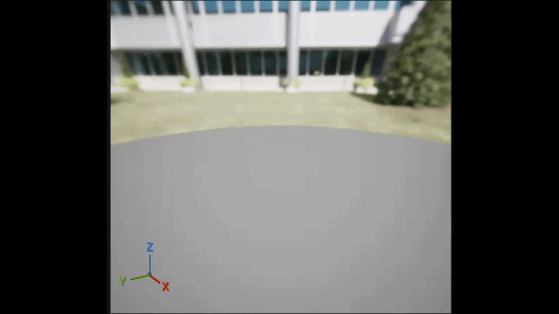
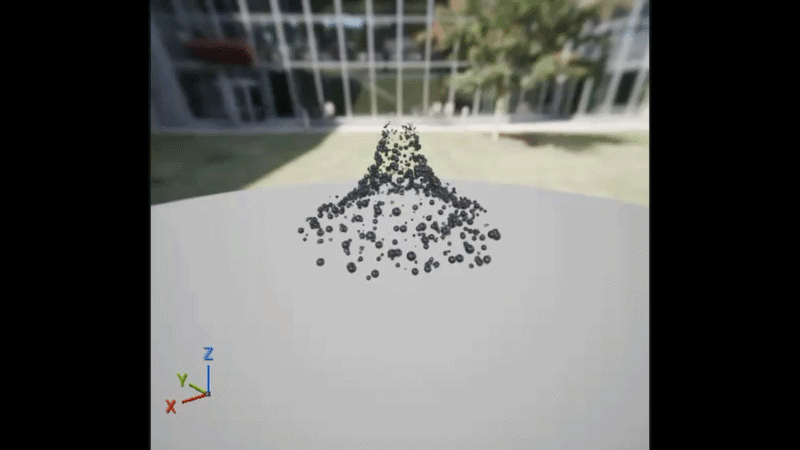
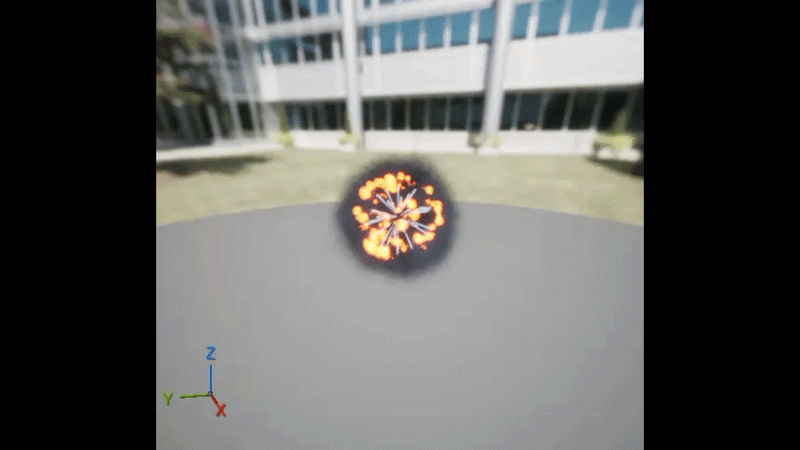
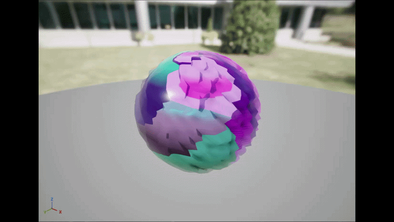

VFXs and Unreal Engine's Niagara System
Context
For the purpose of the SAE Institute's school project, we had to work in groups similar to a normal industry in video games. In that group, it was quickly realized that a **tech art** was missing and so, i took that role and will explain here all that i made as the tech art. (note : this has been made on Unreal Engine 5.4)
Presentation of a typical visual effect made :
For the following, multiple images of a visual effect made will be shown and further down, some explanations on it's making will be done
This is an example of a VFX made :

This VFX is representing a portal leading to another destination. To make it, **Unreal Engine's Niagara System** was used due to its ability to create and manipulate particles with efficiency.

Here we can see in details how this effect was made. This works by dividing the portal in three different effects :
- **The outline**
- **The background**
- **The particles moving from the exterior to the center**
Explanation of the FX :
Let's focus on the outline and explain how it was done :

First, the **Niagara system** works by steps shown by three color distinctions visible on the left of the image. The **green** is for the **Update**, meaning what happens each frame while the particle is alive. The **orange** for the **Begin**, meaning how we create the particle (each frame? a burts in one frame? how much particles? etc..). And finally, the **red** part is for the **Rendering**, where we can chose if we render a simple sprite(a 2D picture or image) or a 3D object, we can select for it to alway face the camera whatever the angle, etc..
Now that we know, we can dive deeper into this system. In the Begin, we have a **spawn rate** meaning this system creates particles non stop. This is a good detail since we want the outline to show non stop.
Then, we can see a **Particle Spawn** section. This section is responsible for the multiple details we want our particles to have as they spawn. This could include a spawn location, a spawn size, color, etc..

Here, we will focus on the location part. This is what this node(written at the top -> Shape Location) does. There are multiple kinds of variables that we can modify to get the result we desire. In this case, it takes as a primitve a **Torus** and not a **Sphere** since taking a circle will make the particles spawn inside of it and not only on the edges. We define it's radius, the lenght of the edge (the Handle variable), the distribution in case we would potentially need to spawn them not uniformly, etc..
Next is the **Particle Update** :
Here, we discribe what we want our particle to do **each frame**. for this, the node **Particle State** is required as it allows the Niagara System to calculate if each particle is alive or dead. It does nothing else and requires no variables. Although, we can't saw the same for the rest, for example, this is the node for the particle size in detail :

This is what this node looks like in details. We can see a graph with two values : **x and y** coresponding to the particle size. We can modify them easily and the graph represents their **life time** allowing for the same result **unrelated to how long they stay**.
Next intersting part to analyze and decribe is the color part :

This section is **devided in two**. The first lets you **manipulate the color**, the **RGB** factor of your color. Here, a linear curve is used allowing to showcase **the color at the particle lives toward her lifetime end**.
Underneath this section, another one **specifically made for the Alpha, the opacity as some may say**. Again, for this example a curve is used, though not a linear one, it allows a precise control over the opacity gradient and it is possible to make more **entry points**, shown by the losanges for a more precise control.
Following this, remains two nodes on the update section : the vortex(allowing the particles to swirl toward the center) and the **solve force and velocity**. This last node works similar to the **Particle State**, it allows the system to calculate forces and velocity impact while requireing no variable whatsoever.
Other Effects with this system :
Here are multiple other examples of VFXs made for this project on this same system, **Niagara System from Unreal Engine**
This is an effect spawned when the player hits an ennemy :

A small vortex effect when a long range ennemy prepares to shoot :

Here is a bombe explosion effect (only plays once in game) :

Following this, is a so called **Material**. An artistic tool that allows your meshes and objects to have textures, normal maps, etc.. In here, was acheived a small code to allow the object using this material to have a slight shake that we can reduce or accentuate as we decide. Here is a little look at what this looks like and how it is used :

And this is how it is used in the game :

Final conclusion
To conclude, this project allowed me to discover how to use Unreal Engine's particle system. It's a whole different aspect of this engine as it doesnt use blueprints or codes, simply nodes interacting with themselves and what you are making. But if i had to go deeper into this system, i would try to learn something called **Scratch Modules**. It allows you to code from scratch a module, a node basically, and manage all the variables in it manually, affect them to what you want (meaning the particles, the system itself, the time, etc..).